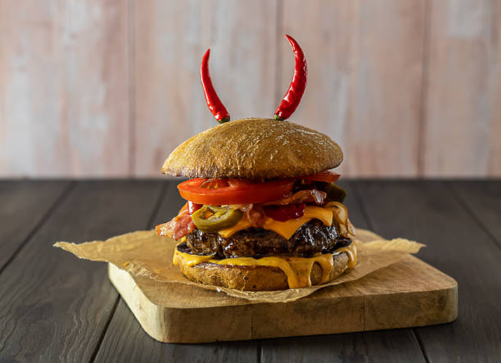
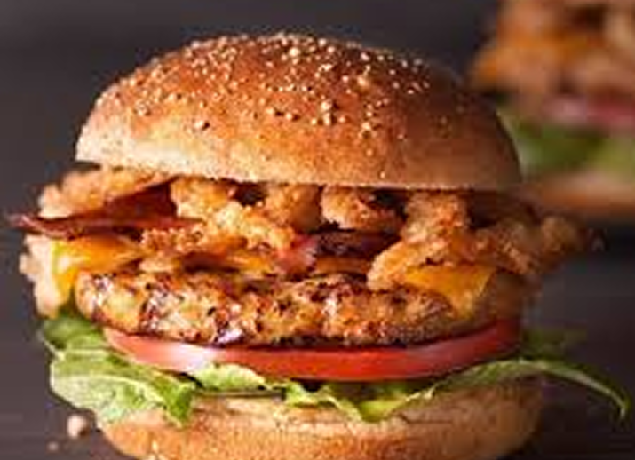

About
Loop - Where Burgers Meet Perfection. Loop is more than a burger spot — it's the taste of freshness, creativity, and passion. Every burger is made to bring you bold flavor, comfort, and joy in every bite.

menu

SPICY BURGER
A spicy burger isa burger with hot or peppery ingredients added to the patty or bun, such as chile peppers, hot sauce, cayenne pepper, or chorizo.

CHEESE BURGER
The classic cheeseburger combines a juicy beef patty, melted cheese, and an array of toppings on a soft bun

CHICKEN BURGER
A chicken burger is a tasty fast food made with juicy chicken, fresh veggies, soft bun, and sauces.

DOUBLE-DECKER CLASSIC
The Double-Decker Classic Burger has two beef patties, soft buns, cheese, fresh veggies, and sauces — a big, tasty, and filling meal.

WHOPPER
A Whopper is the signature large hamburger product of Burger King and its Australian equivalent, Hungry Jack's.

FISH BURGER
Fish burgers are more or less similar to fish cutlets but less spicy. White meat mince from lean fish is generally used for burger preparation.